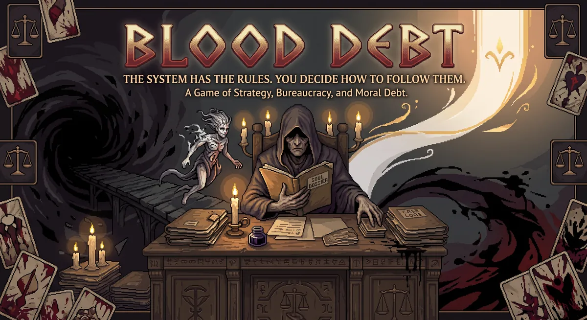
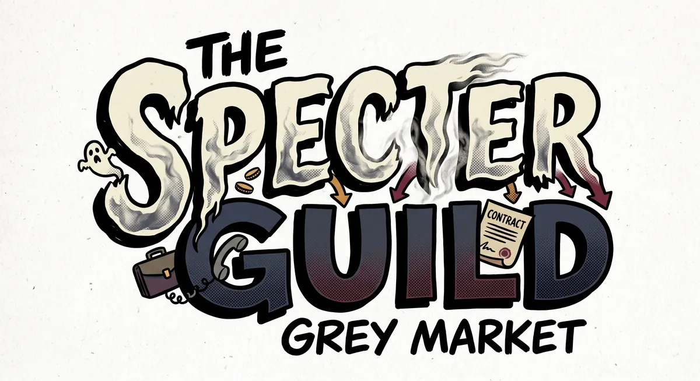
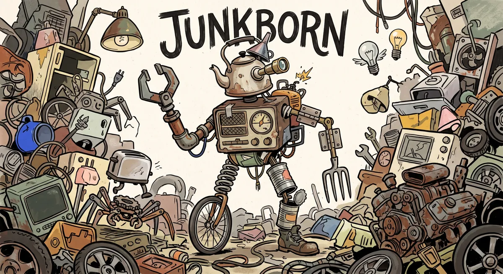
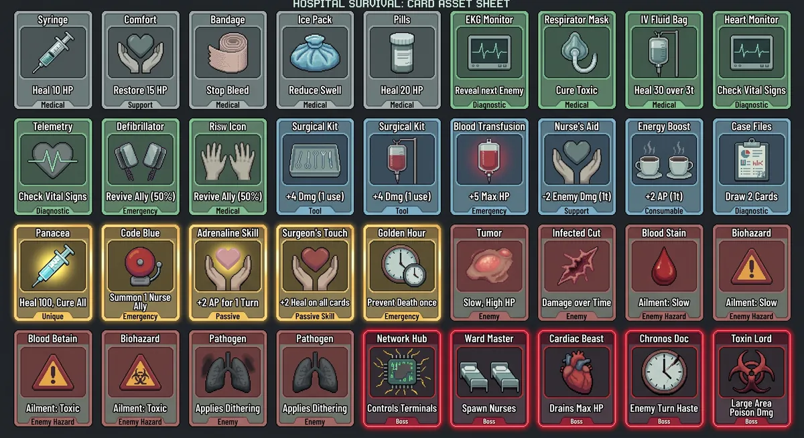
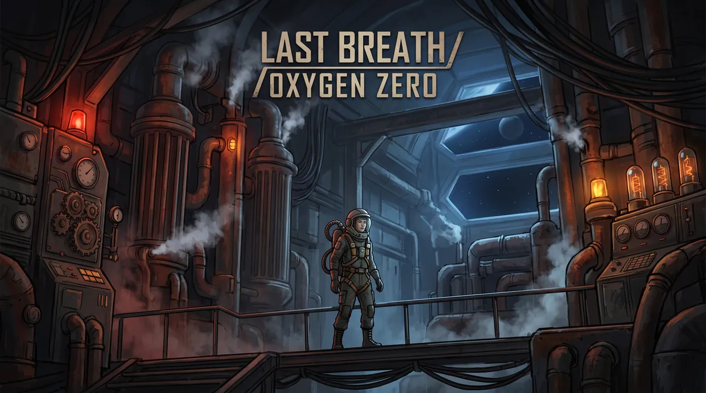

01
 3D PUZZLE
3D PUZZLEDESFASE — SHIFT PROTOCOL
A 3D puzzle where understanding an unstable reality is part of solving it.
SYSTEMS / TENSION / CONSEQUENCE
Game designer building playable systems where every choice changes the shape of the next one.
ENTER THE ARCHIVE ↓02.
THE DESIGNER
I am Lautaro Montoya, a game designer interested in the friction between mechanics and meaning. My work turns unstable spaces, scarce resources, secrets, debt and adaptation into playable decisions.
03.
SELECTED PROJECTS
Click a project to change the signal.
3D PUZZLEA 3D puzzle where understanding an unstable reality is part of solving it.

STRATEGIC CARDSA supernatural bureaucracy where short-term gain leaves a debt that returns.

SIMULATIONInformation, reputation and influence collide inside an underground economy.

ROGUELITEA roguelite of exploration, synergies and adaptation built from what was discarded.

UNITY / C#Card combat where enemies interfere directly with the player's own deck.

TURN-BASEDTurn-based survival: every move consumes the oxygen that keeps you alive.
04.
DESIGN PRINCIPLES
05.
OPEN TO NEW QUESTS
Portfolio built to be explored.
Contact details are available in the CV.